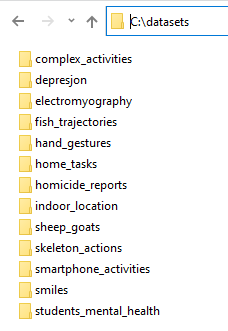
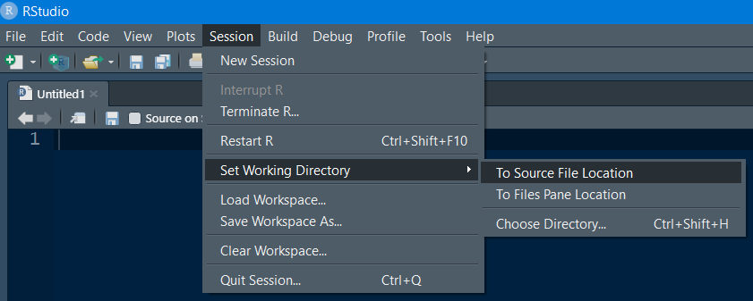
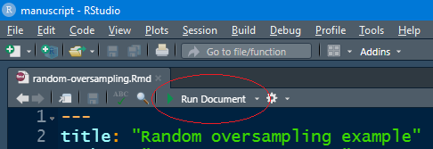

A Setup Your Environment
The examples in this book were tested with R 4.0.5. You can get the latest R version from its official website: www.r-project.org/
As IDE, I use RStudio (https://rstudio.com/) but you can use your favorite one. Most of the code examples in this book rely on datasets. The following two sections describe how to get and install the datasets and source code. If you want to try out the examples, I recommend you to follow the instructions on the following two sections.
The last section includes instructions on how to install Keras and TensorFlow which are the required libraries to build and train deep learning models. Deep learning is covered in chapter 8. Before that, you don’t need those libraries.
A.1 Installing the Datasets
A compressed file with a collection of most of the datasets used in this book can be downloaded here: https://github.com/enriquegit/behavior-free-datasets
Download the datasets collection file (behavior_book_datasets.zip) and extract it into a local directory, for example, C:/datasets/. This compilation includes most of the datasets. Due to some datasets having large file sizes or license restrictions, not all of them are included in the collection set. But you can download them separately. Even though a dataset may not be included in the compiled set, it will still have a corresponding directory with a README file with instructions on how to obtain it. The following picture shows how the directory structure looks like in my PC.

A.2 Installing the Examples Source Code
The examples source code can be downloaded here: https://github.com/enriquegit/behavior-free-code
You can get the code using git or if you are not familiar with it, click on the ‘Code’ button and then ‘Download zip.’ Then, extract the file into a local directory of your choice.
There is a directory for each chapter and two additional directories: auxiliary_functions/ and install_functions/.
The auxiliary_functions/ folder has generic functions that are imported by some other R scripts. In this directory, there is a file called globals.R. Open that file and set the variable datasets_path to your local path where you downloaded the datasets. For example, I set it to:
datasets_path <- "C:/datasets"The install_functions/ directory has a single script: install_packages.R. This script can be used to install all the packages used in the examples (except Keras and TensorFlow which is covered in the next section). The script reads the packages listed in listpackages.txt and tries to install them if they are not present. This is just a convenient way to install everything at once but you can always install each package individually with the usual install.packages() method.
When running the examples, it is assumed that the working directory is the same as the actual script. For example, if you want to try indoor_classification.R, and that script is located in C:/code/Predicting Behavior with Classification Models/ then, your working directory should be C:/code/Predicting Behavior with Classification Models/. In Windows, and if RStudio is not already opened, when you double-click an R script, RStudio will be launched (if it is set as the default program) and the working directory will be set.
You can check your current working directory by typing getwd() and you can set your working directory with setwd(). Alternatively, in RStudio, you can set your working directory in the menu bar ‘Session’ -> ‘Set Working Directory’ -> ‘To Source File Location.’

A.3 Running Shiny Apps
Shiny apps29 are interactive applications written in R. This book includes some shiny apps that demonstrate some of the concepts. Shiny apps file names will start with the prefix shiny_ followed by the specific file name. Some have an ‘.Rmd’ extension while others will have an ‘.R’ extension. Regardless of the extension, they are run in the same way. Before running shiny apps, make sure you have installed the packages shiny and shinydashboard.
install.packages("shiny")
install.packages("shinydashboard")To run an app, just open the corresponding file in RStudio. RStudio will detect that this is a shiny app and a ‘Run Document’ or ‘Run App’ button will be shown. Click the button to start the app.

A.4 Installing Keras and TensorFlow
TensorFlow has two main versions. a CPU and a GPU version. The GPU version takes advantage of the capabilities of some video cards to perform faster operations. The examples in this book can be run with both versions. The following instructions apply to the CPU version. Installing the GPU version requires some platform-specific details. I recommend you to first install the CPU version and if you want/need to perform faster computations, then, go with the GPU version.
Installing Keras with TensorFlow (CPU version) as backend takes four simple steps:
If you are on Windows, you need to install Anaconda30. The individual version is free.
Install the
kerasR package withinstall.packages("keras")Load
keraswithlibrary(keras)Run the
install_keras()function. This function will install TensorFlow as the backend. If you don’t have Anaconda installed, you will be asked if you want to install Miniconda.
You can test your installation with:
library(tensorflow)
tf$constant("Hello World")
#> tf.Tensor(b'Hello World', shape=(), dtype=string)The first time in a session that you run TensorFlow related code with the CPU version, you may get warning messages like the following, which you can safely ignore.
#> tensorflow/stream_executor/platform/default/dso_loader.cc:55]
#> Could not load dynamic library 'cudart64_101.dll';
#> dlerror: cudart64_101.dll not found